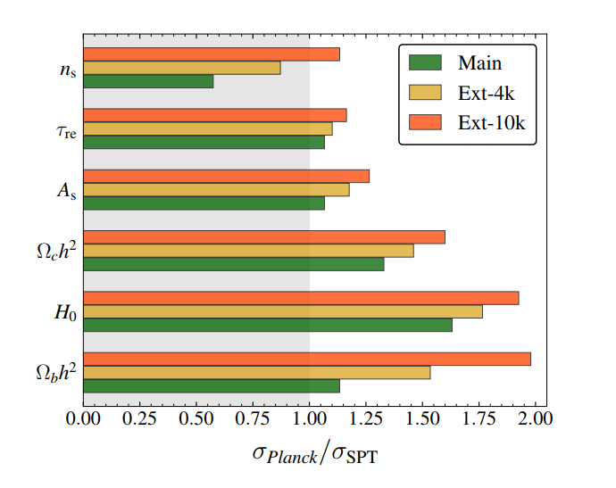
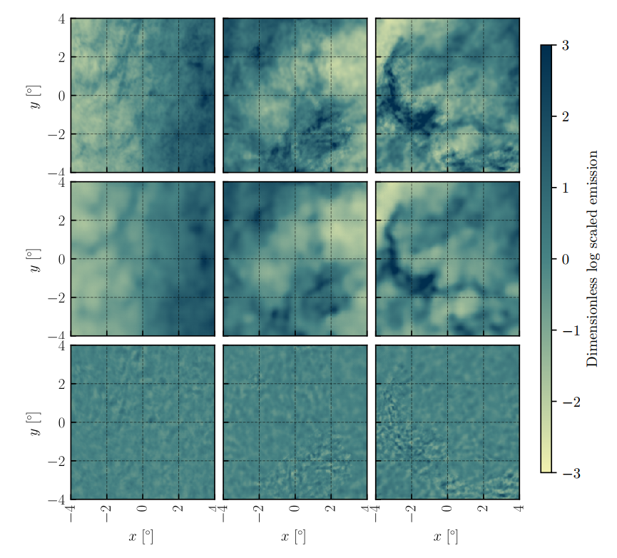

Research Publications
Testing the ΛCDM Cosmological Model with SPT-3G arXiv:2403.17925
K. Prabhu Palimar et al.
We forecast constraints on cosmological parameters enabled by three surveys conducted with SPT-3G, the third-generation camera on the South Pole Telescope. The surveys cover separate regions of 1500, 2650, and 6000 \({\rm deg}^{2}\) to different depths, in total observing 25% of the sky. These regions will be measured to white noise levels of roughly 2.5, 9, and 12 \(\mu{\rm K-arcmin}\), respectively, in CMB temperature units at 150 GHz by the end of 2024. The survey also includes measurements at 95 and 220 GHz, which have noise levels a factor of $$1.2 and 3.5 times higher than 150 GHz, respectively, with each band having a polarization noise level \(\sim \sqrt{2}\) times higher than the temperature noise. We use a novel approach to obtain the covariance matrices for jointly and optimally estimated gravitational lensing potential bandpowers and unlensed CMB temperature and polarization bandpowers. We demonstrate the ability to test the \(\Lambda{\rm CDM}\) model via the consistency of cosmological parameters constrained independently from SPT-3G and Planck data, and consider the improvement in constraints on \(\Lambda{\rm CDM}\) extension parameters from a joint analysis of the SPT-3G and Planck data. The \(\Lambda{\rm CDM}\) cosmological parameters are typically constrained with uncertainties up to $$2 times smaller with SPT-3G data, compared to Planck, with the two data sets measuring significantly different angular scales and polarization levels, providing additional tests of the standard cosmological model.

Generative Modeling of Galactic Dust with VAEs arXiv:2101.11181
B. Thorne, L. Knox, K. Prabhu Palimar
Emission from the interstellar medium can be a significant contaminant of measurements of the intensity and polarization of the cosmic microwave background (CMB). For planning CMB observations, and for optimizing foreground-cleaning algorithms, a description of the statistical properties of such emission can be helpful. Here we examine a machine learning approach to inferring the statistical properties of dust from observational data. In particular, we apply a type of neural network called a Variational Auto Encoder (VAE) to maps of the intensity of emission from interstellar dust as inferred from Planck sky maps and demonstrate its ability to a. simulate new samples with similar summary statistics as the training set, b. provide fits to emission maps withheld from the training set, and c. produce constrained realizations. We find VAEs are easier to train than another popular architecture: that of Generative Adversarial Networks (GANs), and are better-suited for use in Bayesian inference.
